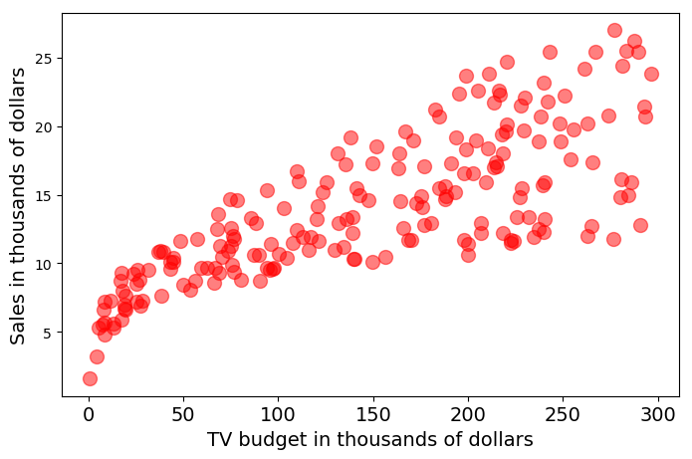
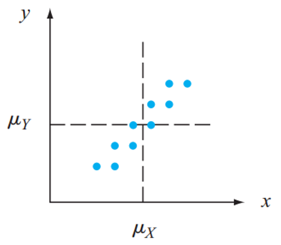
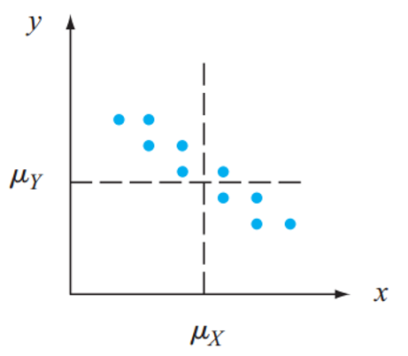
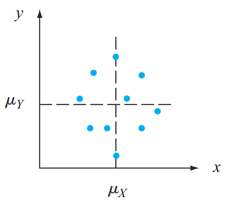
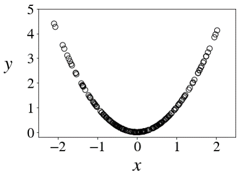

It measures the degree to which two RVs vary together.

The covariance between two RVs \(\color{red}{X}\) and \(\color{blue}{Y}\):
\[ \text{cov}(\color{red}{X}, \color{blue}{Y})\stackrel{\text{def}}{=}\text{E}\big[\big(\color{red}{X}-\text{E}[\color{red}{X}]\big)\cdot\big(\color{blue}{Y}-\text{E}[\color{blue}{Y}]\big)\big] \]



If \(\text{cov}(X, Y)=0\), we say \(X\) and \(Y\) are uncorrelated.
\[ \text{cov}(X, X)=\text{var}(X) \]
Proof
\[ \begin{aligned} \text{cov}(X, X)&=\text{E}\big[(X-\text{E}[X])(X-\text{E}[X])\big] \\ \\ &=\text{E}\big[(X-\text{E}[X])^2\big] \\ \\ &=\text{var}(X) \;\; \color{gray}{\leftarrow\text{by the definition of variance}}\\ \end{aligned} \]
\[ \text{cov}(X, Y)=\text{cov}(Y, X) \]
Proof
\[ \begin{aligned} \text{cov}(X, Y)&=\text{E}\big[(X-\text{E}[X])(Y-\text{E}[Y])\big] \\ \\ &=\text{E}\big[(Y-\text{E}[Y])(X-\text{E}[X])\big] \\ \\ &=\text{cov}(Y, X) \\ \end{aligned} \]
\[ \text{cov}(X, Y)=\text{E}[XY]-\text{E}[X]\text{E}[Y] \]
Proof
\[ \begin{aligned} \text{cov}(X, Y)&=\text{E}\big[(X-\text{E}[X])(Y-\text{E}[Y])\big] \\ &=\text{E}\big[XY-\text{E}[X]Y-\text{E}[Y]X+\text{E}[X]\text{E}[Y]\big] \\ &=\text{E}[XY]-\text{E}[X]\text{E}[Y]-\text{E}[Y]\text{E}[X]+\text{E}[X]\text{E}[Y] \\ &=\text{E}[XY]-\text{E}[X]\text{E}[Y] \\ \end{aligned} \]
\(X\): whether they are a current smoker
\(Y\): whether they will develop lung cancer at some point
| \(Y=0\) | \(Y=1\) | \(p_X(x)\) | |
|---|---|---|---|
| \(X=0\) | \(72\%\) | \(3\%\) | \(75\%\) |
| \(X=1\) | \(20\%\) | \(5\%\) | \(25\%\) |
| \(p_Y(y)\) | \(92\%\) | \(8\%\) | \(100\%\) |
What is the covariance between \(X\) and \(Y\)?
\[ \text{cov}(aX+b, Y)=a\cdot\text{cov}(X, Y), \] \[ \text{for any constants $a$ and $b$.} \]
Proof
\[ \begin{aligned} \text{cov}(aX+b, Y)&=\text{E}\big[(aX+b-\text{E}[aX+b])(Y-\text{E}[Y])\big] \\ &=\text{E}\big[(aX+b-a\text{E}[X]-b)(Y-\text{E}[Y])\big] \\ &=a\cdot\text{E}\big[(X-\text{E}[X])(Y-\text{E}[Y])\big] \\ &=a\cdot\text{cov}(X, Y) \\ \end{aligned} \]
\[ \text{cov}(aX+b, Y)=a\cdot\text{cov}(X, Y), \] \[ \text{for any constants $a$ and $b$.} \]
Similarly, we have
\[ \text{cov}(X, aY+b)=a\cdot\text{cov}(X, Y), \] \[ \text{for any constants $a$ and $b$.} \]
Assume we found the covariance between air temperature (in Fahrenheit) and humidity is 18.
\[ \text{cov}(\text{Fahrenheit, Humidity}) = 18 \]
What is the covariance if the temperature is in Celsius?
\[ \text{cov}(\text{Celsius, Humidity}) = ? \]
\[ \text{Celsius} = \frac{5}{9} (\text{Fahrenheit} - 32) \]
\[ \text{cov}(X+Y, Z)=\text{cov}(X, Z)+\text{cov}(Y, Z) \]
\[ \small{ \begin{aligned} &\;\text{cov}(X+Y, Z) \\ =&\;\text{E}\big[(X+Y-\text{E}[X+Y])(Z-\text{E}[Z])\big] \;\;\; \color{gray}{\leftarrow\text{by def. of cov}} \\ =&\;\text{E}\big[(X-\text{E}[X]+Y-\text{E}[Y])(Z-\text{E}[Z])\big] \\ =&\;\text{E}\big[(X-\text{E}[X])(Z-\text{E}[Z])+(Y-\text{E}[Y])(Z-\text{E}[Z])\big] \\ =&\;\text{E}\big[(X-\text{E}[X])(Z-\text{E}[Z])\big]+\text{E}\big[(Y-\text{E}[Y])(Z-\text{E}[Z])\big] \\ =&\;\text{cov}(X, Z)+\text{cov}(Y, Z) \\ \end{aligned} } \]
Similarly, we have
\[ \begin{aligned} \text{cov}(X, Y+Z)=&\;\text{cov}(X, Y)+\text{cov}(X, Z) \\ \\ \text{cov}(X+Y, Z+W)=&\;\text{cov}(X, Z) + \\ &\; \text{cov}(Y, Z)+ \\ &\; \text{cov}(X, W)+ \\ &\; \text{cov}(Y, W) \\ \end{aligned} \]
\[ \text{var}(X+Y)=\text{var}(X)+\text{var}(Y)+2\text{cov}(X, Y) \]
Proof
\[ \begin{aligned} &\;\text{var}(X+Y) \\ =&\;\text{cov}(X+Y, X+Y) \\ =&\;\text{cov}(X, X) + \text{cov}(Y, X) + \text{cov}(X, Y) + \text{cov}(Y, Y) \\ =&\;\text{var}(X)+\text{var}(Y)+2\text{cov}(X, Y) \end{aligned} \]
\[ \begin{aligned} \text{var}(X+Y)&=\text{var}(X)+\text{var}(Y)+2\text{cov}(X, Y) \\ \\ \text{var}(X-Y)&=? \\ \end{aligned} \]
If we replace \(Y\) with \(-Y\)
\[ \begin{aligned} \text{var}(X-Y)&=\text{var}(X)+\text{var}(-Y)+2\text{cov}(X, -Y) \\ &=\text{var}(X)+(-1)^2\text{var}(Y)-2\text{cov}(X, Y) \\ &=\text{var}(X)+\text{var}(Y)-2\text{cov}(X, Y) \\ \end{aligned} \]
If two RVs \(X\) and \(Y\) are independent, \(\text{cov}(X, Y)=0\).
Proof
\[ \text{cov}(X, Y)=\text{E}[XY]-\text{E}[X]\text{E}[Y]=0 \]
\[ X \sim \text{N}(0, 1),\;\;\;\;\;\; Y = X^2 \]
\[ \begin{aligned} \text{cov}(X, Y)&=\text{E}[XY]-\text{E}[X]\text{E}[Y] \\ \\ &=\text{E}\big[X \cdot X^2\big] - 0 \cdot \text{E}\big[X^2\big] \\ \\ &=\text{E}\big[X^3\big] \\ \\ &=\int_{-\infty}^{+\infty} z^3(\frac{1}{\sqrt{2\pi}}e^{-\frac{z^2}{2}})dz = 0 \end{aligned} \]
\[ X \sim \text{N}(0, 1),\;\;\;\;\;\; Y = X^2 \]
\[ \text{cov}(X, Y)=0 \]
\[ X \sim \text{N}(0, 1), \;\;\;\;Y = X^2, \;\;\;\;\text{cov}(X, Y)=0 \]

If \(X\) and \(Y\) are independent, then
\[ \text{var}(X + Y)=\text{var}(X) + \text{var}(Y) \]
Proof
\[ \begin{aligned} \text{var}(X+Y)&=\text{var}(X)+\text{var}(Y)+2\text{cov}(X, Y) \\ \\ &=\text{var}(X)+\text{var}(Y)+2\cdot 0 \\ \\ &=\text{var}(X)+\text{var}(Y) \\ \end{aligned} \]